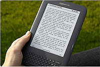
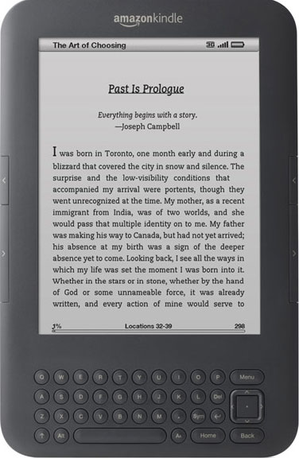
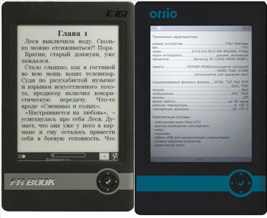
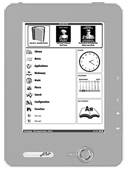
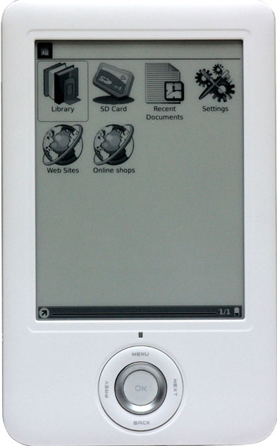
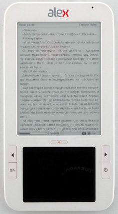

О выборе электронного ридера


Электронные ридеры - устройства на так называемой "электронной бумаге" (E-Ink) - уже несколько лет очень популярны. Если в 2002-2005 годах их можно было увидеть в основном только у всяких компьютерных гиков, то сейчас складывается такое ощущение, что ридеры есть почти у всех, несмотря на их пока еще немалую стоимость. Даже пенсионеры, которые обычно с недоверием относятся ко всяким электронным штучкам, от этих гаджетов приходят просто в восторг, но оно и неудивительно - с помощью электронных ридеров пожилые люди могут наконец-то выставить тот размер шрифта, который им будет комфортно читать.Однако решить приобрести ридер - элементарно, а вот выбрать нужный среди большого разнообразия моделей, присутствующих на рынке, - не так уж и просто, особенно когда не знаешь, чем все они отличаются между собой.
Также многие люди совершенно безосновательно считают, что, покупая признанный бренд (тот же Sony Bookreader), они переплачивают за имя, поэтому приобретают какой-нибудь Rolsen REB-601, после чего значительно расширяют свой список энергичных, хотя и не совсем приличных выражений.
В этой статье мы поговорим о том, на какие группы делятся современные ридеры, чем они отличаются друг от друга, какие из них можно, нужно или, наоборот, совершенно не нужно покупать.
Итак. Я обычно делю современные ридеры на следующие группы (деление, сразу предупреждаю, условное и субъективное).
1. Sony Bookreader (модели PRS-350, PRS-650 и PRS-950)
На данный момент я считаю, что это лучшие ридеры на рынке, особенно модели 350 (5") и 650 (6"). Отличный дизайн, самая современная электронная бумага, новый тип сенсорного экрана, не влияющего на изображение, а кроме того, это бренд из брендов, потому что эпоха современных ридеров и началась с Sony Book Reader PRS-500. Единственные тут минусы - эти ридеры по определению не понимают формат книг FB2, который в России очень распространен, а также у них не так просто составлять коллекции по папкам. Впрочем, обе эти проблемы легко решаемы, о чем я неоднократно писал в обзорах этих ридеров.
Sony PRS-650
2. Amazon Kindle (модель Kindle 3)
Не сильно заточенный под наши задачи ридер - он в основном сделан для того, чтобы можно было в удобной форме покупать книги в магазине Amazon и читать их. У ридера есть кнопочная клавиатура, делающая ридер громоздким, экран не сенсорный, из форматов понимает только свой собственный. Однако стоит очень дешево и официально поставляется в некоторые страны СНГ (в Россию не поставляется), поэтому пользуется популярностью.

Amazon Kindle 3
3. Китайско-украинско-российские ридеры
В Китае выпускают массу самых разнообразных ридеров - с качеством, как правило, от очень среднего до очень плохого. Для многих из этих ридеров украинские и российские компании пишут (или адаптируют) программное обеспечение, а потом продают ридеры под своим брендом.
За очень редкими исключениями, такие ридеры покупать не особенно рекомендуется. Убогий дизайн, плохие материалы, ужасная отделка, а главное - все это глючит, виснет, растрескивается и придуривается по полной программе. Исключения бывают, но они только подтверждают правило.
Я тестировал десятки этих ридеров - так вот, некоторые из них меня просто приводили в шок, потому что ну нельзя выпускать на рынок такое убожество.

FR-Book и Orsio
4. PocketBook
PocketBook, с одной стороны, точно такое же детище китайско-украинского содружества, как и третья группа. Но я эти ридеры все-таки выделяю в отдельную категорию, потому что они, на мой взгляд, заметно лучше по качеству (последние модели), а кроме того, там реально очень продвинутое программное обеспечение. У этих ридеров есть свои недостатки - у моделей 301 и 360 пользователи жаловались на дисплеи, которые нередко быстро приходили в негодность, а у новых продвинутых моделей вроде 603 количество возможностей явно пошло в ущерб простоте и удобству работы.
Тем не менее PocketBook пока явно стоит особняком в длинном ряду третьей группы.

PocketBook Pro 603
5. Китайско-международные ридеры
Аналогичным образом, совместно с китайскими производителями, ридеры выпускают и всякие французские, немецкие, итальянские и прочие фирмы, причем некоторые из этих устройств попадают на российский рынок. Вот, например, Onyx Boox 60 - продукт французско-китайского сотрудничества. Впрочем, многие из этих фирм - в общем-то, чисто китайские, просто зарегистрированы во Франции, Германии, Италии, США и так далее.

Onyx Boox 60
6. Двухдисплейные ридеры
Отдельная группа ридеров, которые, кроме обычного дисплея на электронных чернилах, снабжены еще и ЖК-экранчиком для всяких вспомогательных целей. Яркие представители - Nook и Spring Design Highscreen Alex. На мой взгляд, в таких ридерах особого смысла нет, однако есть пользователи, которым такие навороты нравятся.

Alex
Различные прибамбасики
Вроде бы основная обязанность ридера на электронных чернилах - позволять в удобной форме выбирать произведение и читать его. Однако многие производители, понимая, что им трудно тягаться с Sony Reader (качество) и с Amazon Kindle (цена), стараются напичкать ридер всякими дополнительными возможностями, надеясь, что хоть это привлечет пользователей.
Среди этих возможностей - следующие.
1. Покупка книг в онлайне
Как раз покупка книг в онлайне - закономерная и удобная возможность для электронной читалки. Поэтому ее предлагают и в Sony Reader, и в Amazon Kindle, и в Nook, и во многих других ридерах. Для европейского и американского рынка это актуально, для российского - пока совсем неактуально, особенно в свете того, насколько криво подобная опция реализована в том же PocketBook, "Айчиталке" и так далее. Куда проще купить книгу на сайте и скачать ее на компьютер, а уж потом перенести в ридер.
2. Интернет-браузер
Раз есть покупка книг в онлайне, значит, есть выход в Интернет. Есть выход в Интернет - производители включают в состав программного обеспечения ридера убогий браузер. Пользоваться им невозможно (специфика электронных дисплеев), но считается, что это кого-то привлекает.
3. Игры
С играми та же история. Жуткая убогость, но включается в ридер из серии "шоб было".
4. Рукописные заметки
Для ридеров со стилом (сенсорные экраны по типу Wacom) разработчики включают возможность делать рукописные заметки. Никакого смысла в этом нет - ридер так тормозит с прорисовкой, что это не заметки, а слезы.
5. Часы, календари, калькуляторы и прочие приложения
Примитивные приложения календарь, калькулятор, часы и так далее - многие производители не могут удержаться без того, чтобы это добавить в главное меню ридера. Вряд ли кто-то этим реально пользуется, ибо предельно неудобно, но зато производитель говорит: "Мой ридер - самый продвинутый".
Выводы и рекомендации
Когда меня спрашивают, какой именно ридер в России имеет смысл покупать, мой ответ на данный момент однозначен - Sony Reader PRS-650 или Sony Reader PRS-350. Причем пятидюймовый (PRS-350), как правило, больше шестидюймового нравится многим пользователям, потому что он компактный и легкий. И он еще реально недорогой - . PRS-650 стоит заметно дороже - .
В принципе если нужен обязательно шестидюймовый и хочется сэкономить, тогда очень неплохие варианты - Amazon Kindle 3 за или Nook 3G за .
PocketBook Pro 603 продается в среднем за - я бы его однозначно не стал брать за такие деньги. Sony PRS-650, пусть даже за (в России), на мой взгляд, лучше просто на порядок.
Что же касается остальных ридеров, коих на рынке просто десятки... Я бы на вашем месте не стал экспериментировать. Да, среди них можно найти неплохую модель. Если постараться. И если очень повезет. Но в данном случае бренд - он очень важен. И вы тут платите за качество и удобство, а не просто за имя.
Среди всякой китайщины мне попадались такие ридеры, которые просто приводили в ужас. А ведь они, как правило, продаются по цене от 5-6 тысяч рублей. При этом за 6-7 тысяч вы можете купить безусловный бренд, а не черт знает чью поделку.
И даже если эти всякие Rolsen REB-601 (реальный кошмар), "Азбука" (крайне средненький ридер) и всякие Explay (тоже ниже плинтуса) можно достать за 4500-5000 рублей - уверяю вас, они, за очень редкими исключениями, даже этих денег совершенно не стоят.
Ну и напоследок отвечаю на вопрос, какой именно ридер использую лично я. Так вот, я не читаю с ридеров. Я читаю с планшета - с iPad. Мне он удобнее. Однако всем родственникам советую и покупаю Sony Reader. В основном модель 350.